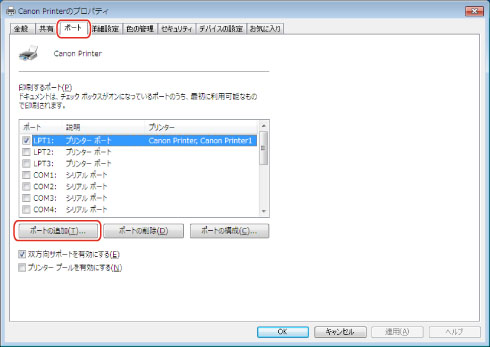
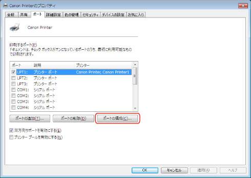
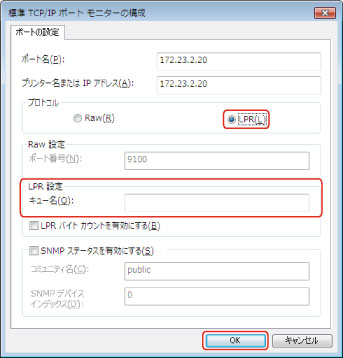

ドライバーのインストール後に、ネットワーク接続されているデバイスで使用するプリンターポートを「Standard TCP/IP Port」へ変更します。ここでは、LPRプロトコル、Rawプロトコルを使用する場合の設定方法を説明しています。
|
重要
|
|
コンピューターを起動した際に、必ずAdministratorsのメンバーとしてログオンしてください。
|
|
メモ
|
|
LPRは、TCP/IPで一般的に使用されているプロトコルです。
Rawは、Windowsで利用できるプロトコルです。LPRより高速にデータを送信できます。
|
1
ドライバーをインストール
詳細は、「
ポートを設定してインストール」を参照してださい。
仮のポート（［LPT1］など）を設定します。
2
［

］（スタート）メニューから［デバイスとプリンター］を選択
Windows 8/8.1/Server 2012/Server 2012 R2：デスクトップで画面右側のチャームを表示したあと、［

設定］→［コントロールパネル］→［デバイスとプリンター］をクリックまたはタップ
Windows Vista：［
］（スタート）－［コントロールパネル］－［プリンタ］を選択
Windows XP Professional/Server 2003：［スタート］－［プリンタとFAX］を選択
Windows XP Home Edition：［スタート］－［コントロールパネル］－［プリンタとその他のハードウェア］－［プリンタとFAX］を選択
3
設定を行うデバイスのアイコンを右クリック → [プリンターのプロパティ](または［プロパティ］)をクリック
4
［ポート］タブ → ［ポートの追加］をクリック

5
［プリンターポート］/［プリンタポート］ダイアログボックスで、［利用可能なプリンタポートの種類］/［利用可能なポートの種類］から［Standard TCP/IP Port］を選択 → ［新しいポート］をクリック
6
［標準TCP/IPプリンターポートの追加ウィザード］で、［次へ］をクリック
7
[プリンター名またはIPアドレス]にデバイス名、またはIPアドレスを入力 → ［次へ］をクリック
デバイス名は、ネットワーク上で使用されているデバイス名を使用してください。
［ポート名］は自動的に入力されます。必要に応じて変更してくだい。
［ポート情報がさらに必要です］（または[追加のポート情報が必要です]）画面が表示された場合は、以下のいずれかの操作を行います。
ウィザードの前のページに戻る → [プリンター名またはIPアドレス]を再入力 → ［次へ］をクリック
［デバイスの種類］で［標準］を選択 → ［Canon Network Printing Device with P9100］を選択 → ［次へ］をクリック
|
メモ
|
|
お使いの機種によっては、［ポート情報がさらに必要です］（または[追加のポート情報が必要です]）画面の［デバイスの種類］-［標準］で選択するデバイス種類が異なる場合があります。
|
8
［完了］をクリック
9
［プリンターポート］/［プリンタポート］ダイアログボックスで、［閉じる］をクリック
10
［ポートの構成］をクリック

11
ポートを設定
［プロトコル］で［LPR］を選択 → ［LPR設定］の［キュー名］にプリントキュー名を入力 → ［OK］をクリック

［キュー名］に次のいずれかのプリントキューを指定できます。
LP：デバイスのスプールの設定に従って出力します。通常はこの設定にしてください。
SPOOL：デバイスの設定にかかわらず、常にハードディスクにスプールしてから出力します。
DIRECT：デバイスの設定にかかわらず、常にハードディスクにスプールせずに出力します。
［プロトコル］で［Raw］を選択 → ［OK］をクリック
12
［閉じる］をクリック